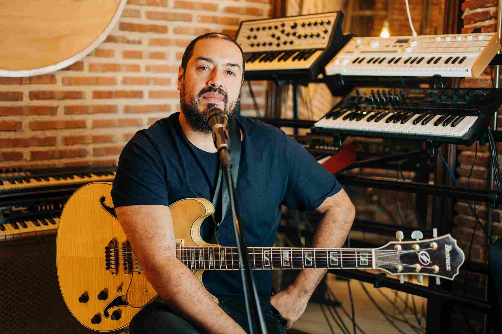
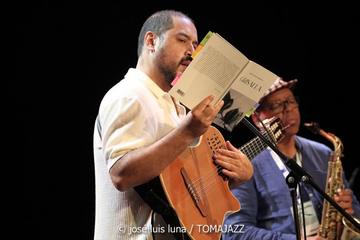
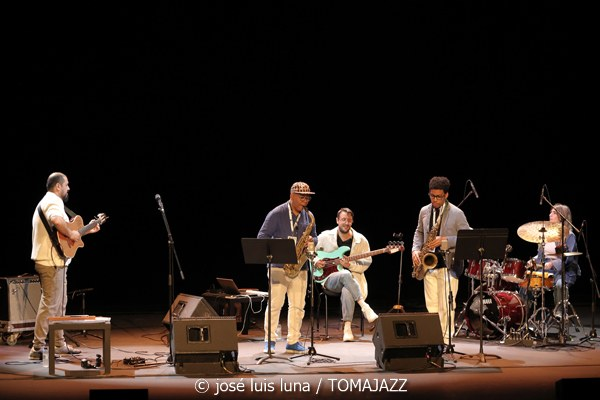

A01
Bruegel Sound
Live project · 2025
Jazz, poetry, electronics and Chilean instruments in an immersive concert format.
Composer · Guitarist · Musicologist
I work across contemporary jazz, Chilean oral traditions, electroacoustic music, poetry and computational tools—building forms where listening becomes research.
Madrid ↔ Chile · Available for concerts, talks and collaborations

Current live project

An impossible encounter: jazz, electronics and poetry.
Built from the poems of Grisalla and the visual worlds of Pieter Bruegel, the project moves between composition and improvisation without turning one language into an illustration of another.
“I dream that listening might become the sense of the future.”
A concise map of the projects that best explain the work.
Live project · 2025
Jazz, poetry, electronics and Chilean instruments in an immersive concert format.
Album · 2021
An open-form jazz record shaped by improvisation, poetry and transformed traces of Chilean musical traditions.
Musicology · PhD research
Electroacoustic creation analysed through logostructure, mixture and symptom from a feminist perspective.
Digital humanities · Live research prototype
A system for navigating and sonifying multimodal archives as relational worlds of text, image, sound and metadata.
Navigable research environment
Córdoba is the first public world of the Imaginal Thinking Engine: an experimental space where images, texts and sounds can be explored through their relations.

The Córdoba prototype will open as a stable, playable experience inside this website.
World upload and external processing are in development. The public site will remain a clear demonstration, not an unfinished tool.

© José Luis Luna Rocafort / Tomajazz, 2025Research is not the backstage of the music
My work connects music analysis, feminist theory, electroacoustic practices, Chilean oral traditions and computational methods. The aim is not to place theory beside sound, but to let each transform the other.
2025
La Estrategia del Caracol2025
MasJazz2022
Tomajazz2025
Chilean composer, guitarist and musicologist based in Madrid.
PhD in Musicology, cum laude, from the University of Valladolid. His work moves between contemporary jazz, electroacoustic research, poetry and living oral traditions. He teaches at university level and develops artistic research where archives, technology and listening become compositional materials.
With MECHA, he received Chile’s Pulsar Award for Best Jazz and Fusion Album in 2018. He is the author of the poetry collection Grisalla and has presented artistic and academic work in Spain, Chile and across Latin America.
Concerts · Research · Lectures · Collaborations